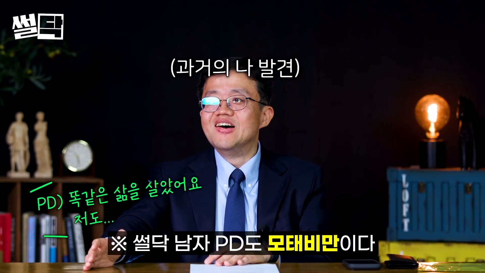

아구통 의사 : KFC 징거더블다운맥스 맛있겠다 생각하면 비만이다
댓글
체지방률 14퍼 정도인데 군침이 싹 돈다
술안주아니고 밥이면 저거 안먹지
시발 개존나맛잇네 하면서 다처먹는게 정상이 아니었다고??
저런 메뉴가 있는지 지금 처음 알았다 개신기하네
일단 내일 저녁으로 한번 먹어봐야지
아 웃겨라
비만이니까 맛있게 먹어야겠다
맛있겠다보단 단백질이 두개 라는 생각으로 먹는데
논외 인데
요즘 징거버거 너무 안맵지않어?
매콤한게 좋았는데
시키면 밥이랑 같이 먹음 밥도둑임 ㄹㅇ
맛있겠다라는 생각이랑 체하겠지라는 생각이랑 같이들어
저거 밥이랑 먹음 ㅋㅋ
저거보자마자 감탄했고 바로 다먹음....
거기에다가 슬픈건 2개시키면좋겠는데 가격비싸서 못시키는 내 지갑사정이었음.....
저거 존나 맛있어
소화가 잘안되서 이제 못먹어...ㅜㅠ
이제 저거 다먹으면 바로 아자잣! 해서 못먹음
저기에 치킨까지 먹는다고...?
존나 마시게따히힣 하고 주문해서 먹었는데
반도 다 못먹음ㅋㅋㅋ
저거 떡벽임ㅋㅋㅋㅋ
처음 몇입은 진짜 맛있는데 단품조차도 1/3쯤 남을 무렵부턴 니글니글하고 배불러서 포기함
이정도면 정신병 수준같아보이네
ㅈㄴ 맛있어서 자주먹는데 맛있게 먹으면 0칼로리임 덕분에 살 안찜
맛있겠다 생각하면 비만.
맛있다 하면 고도비만.
하나 더 먹을까 하면 초고도비만.
kfc가 맛있긴 한거 맞어???
난 별로던데 진짜..너무 별로야.
오리지널랑 크리스피 염도 20%가까이 차이나서
오리지널은 짜다고 느끼는 사람들 많긴함
그냥 바로 해주면 좋을거 같긴한데
항상 주문하면 만들어 둔 것들 식지않게 냅둔거 주는듯 하고 덕분에 기름기 오져서 힘들음.
kfc 치킨은 기름 떡진 눅눅한 닭고기라고 각인되어서 아예 메뉴 선택지에 존재 하지 않음
저걸 왜 다못먹지
나 한참 스트레스받으면 징거더블다운맥스 세트가있었는데 그거 저녁한끼로 다먹고 그랬음
그러다가 위고비 맞고 굶으면서 빼다가 담낭염와서 절제함 ㅎㅎ...
저 기준으론 나는 비만이 아니네ㅋㅋ
'내가 꿈만 꾸던 최고의 조합이네?' 눈빛이 다르시다 ㅋㅋ
난 저거 시켜서 밥이랑 김치랑 먹는데 치킨이 두개가 오는거니까
나는 비만은 아닌데 맛있어서 좋아함 대신 저거 먹으면 사이드 먹을 생각은 안듦